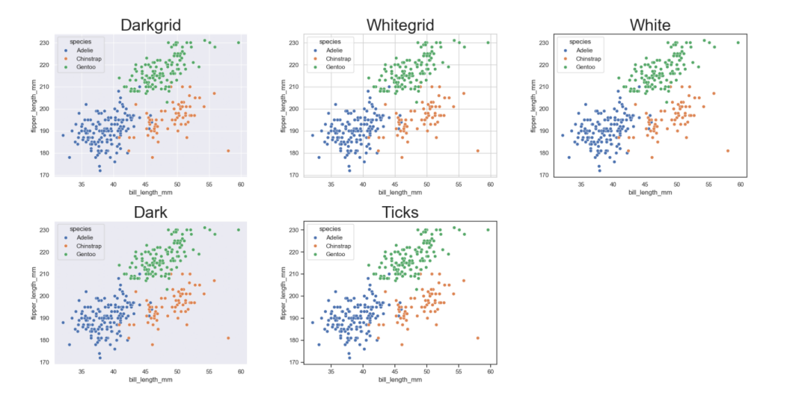

import pandas as pd
import matplotlib.pyplot as plt
import seaborn as sns
sns.set_theme() # Sets the default theme for seaborn
penguins = sns.load_dataset('penguins') # Data set which will be used for most examplesSeaborn quick reference
Plots
Seaborn is a high level library built on matplotlib which uses a declarative approach to create plots. Below are some plots and theming to be used as reference.
Scatter plot
A simple scatter plot can made through code seen below. Hue='species' colors the points after species and groups the data, which is more relevant in other graphs. Labels are set here as an example, but are usually not set in following examples to reduce code clutter.
# Plot
g = sns.scatterplot(penguins, x='bill_length_mm', y='flipper_length_mm', hue='species')
# Labels
g.set_xlabel('Bill length (mm)')
g.set_ylabel('Flipper Length (mm)')
g.set_title('Flipper and bill length of penguins')
plt.show()Seaborn has a default function for generatinog a pairplot. See PairGrid for a more customizable option.
sns.pairplot(penguins, hue='species')
plt.show()Bar plot
Seaborn contains two types of barplots: countplot() which fittingly counts entries within categories to determine bar height and barplot() which uses an estimator to determine bar height. The default is estimator='mean', however, 'median', 'max', 'min' or a callable function (vector -> scalar) can also be used. barplot() also supports error bars of 4 different types: 'sd' (standard deviation of data), 'pi' (percentile of data), 'se'(standard error of mean estimate) and 'ci' (bootstrap confidence intervals). More on these can be seen at (https://seaborn.pydata.org/tutorial/error_bars.html).
g = sns.countplot(penguins, x='species', hue='species')g = sns.barplot(penguins, x='sex', y='bill_length_mm', hue='species')
sns.move_legend(g, 'lower center', bbox_to_anchor=(0.5,1), ncol=3, frameon=False)Histogram
Default position is 'layer'. Use position 'stack' for stacked histograms. Change bins with bins = n or binwidth = c. Bins/binwidth is determined automatically for this example.
g = sns.histplot(penguins, x='bill_length_mm', hue='species', multiple='stack')g = sns.histplot(penguins, x='bill_length_mm', hue='species')Distribution plot
The kdeplot() runs a kernel density estimation using a Gaussian kernel. Smoothing bandwidth can be changed with bw_method. Defalts to multiple='layer', but can also be set to 'stack' or 'fill'. (one should however be careful and fully aware of what is displayed when using the latter option)
g = sns.kdeplot(penguins, x='bill_length_mm', hue='species', fill=True, alpha=0.6)g = sns.kdeplot(penguins, x='bill_length_mm', hue='species', fill=True, alpha=0.8, multiple='stack')g = sns.kdeplot(penguins, x='bill_length_mm', hue='species', fill=True, alpha=0.8, multiple='fill')A faceted plot can be made in two different ways, with similar results. The highlevel functions, such as displot(), have faceting built into them. Simply set row=C1 and/or col=C2. FacetGrid() can be used in a similar manner, but is first defined as a grid and then mapped to a function.
g = sns.displot(penguins, kind='kde', row='species', x='bill_length_mm', hue='species', fill=True, height=2, aspect=4)g = sns.FacetGrid(penguins, row='species', hue='species', margin_titles=True, height=2, aspect=4)
g.map_dataframe(sns.kdeplot, x="bill_length_mm", fill=True)Box plot
g = sns.boxplot(penguins, x='sex', y='bill_length_mm', hue='species')
sns.move_legend(g, 'lower center', bbox_to_anchor=(0.5,1), ncol=3, frameon=False)Themes
Themes can be set with the sns.set_theme(style='chosen_theme'), with the built in options 'darkgrid' (default), 'dark', 'whitegrid', 'white' and 'ticks'. Pallette and font type can also be set in the function.
im = plt.imread("./images/seaborn_themes.png")
fig, ax = plt.subplots(figsize=(14, 7))
ax.imshow(im)
plt.axis('off')
plt.show()
Palettes
Palettes can be set either in the plot function or in a with clause. By default, Seaborn supports matplotlib’s and ColorBrewer’s color palettes, however, own palettes can also be created.
For more information see e.g. color palette tutorial.
fig, axes = plt.subplots(ncols=2)
fig.set_figheight(4)
with sns.color_palette('Set2', 3):
sns.scatterplot(penguins, ax=axes[0], x='bill_length_mm', y='bill_depth_mm', hue='species', )
sns.scatterplot(penguins, ax=axes[1], x='bill_length_mm', y='bill_depth_mm', hue='species', palette=sns.color_palette('Accent', 3))
plt.show()Custom color palettes can be made with a sequence of colors in any format accepted by matplotlib. For example, hexadecimal RGB notation can be seen below.
sns.color_palette(["#D00000", "#00D000", "#0000D0", "#C0C000", "#00C0C0", "#C000C0"])